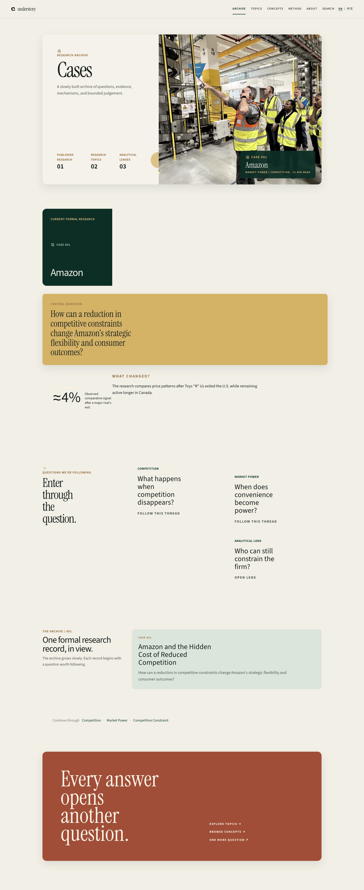
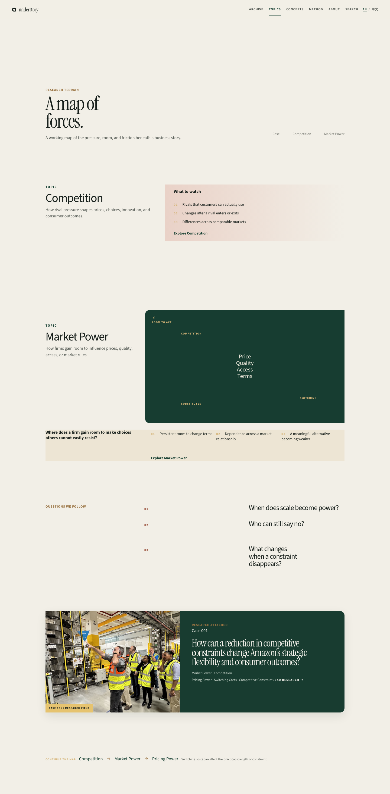
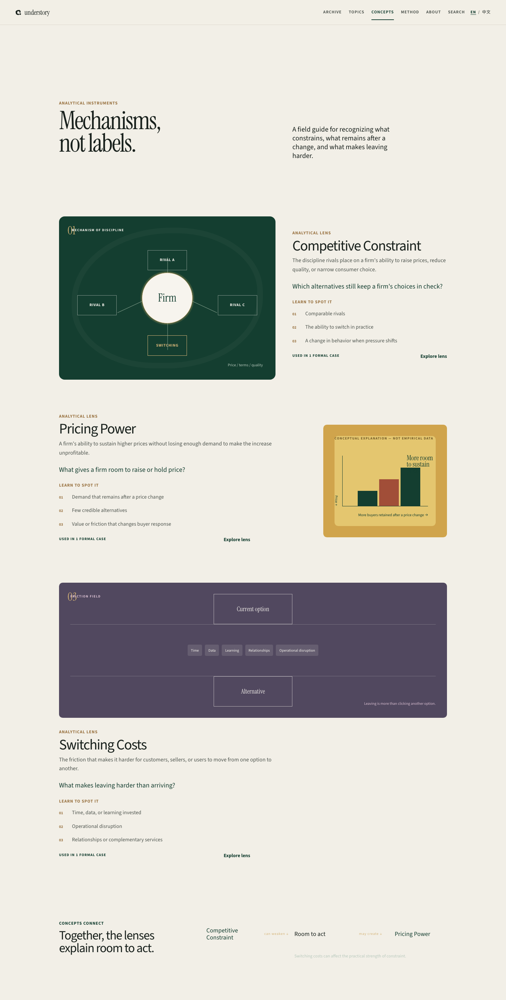


<!doctype html><meta charset="utf-8"><title>Round 6 — 25% overview</title><style>html,body{margin:0;background:#ece8de;color:#163d34;font:14px system-ui}header{padding:24px 4vw 14px;display:flex;justify-content:space-between}h1{font:600 24px Georgia,serif;margin:0}main{display:grid;grid-template-columns:1fr 1fr;gap:18px;padding:0 4vw 4vw}figure{margin:0;background:#f8f6ef;padding:12px;box-shadow:0 8px 22px #162c2416}figcaption{font-size:11px;text-transform:uppercase;letter-spacing:.12em;margin:0 0 9px}img{display:block;width:100%;height:560px;object-fit:contain;object-position:top;background:#f8f6ef}@media(max-width:700px){main{grid-template-columns:1fr}img{height:360px}}</style><header><h1>Round 6 · silhouette review</h1><span>25% composition overview</span></header><main><figure><figcaption>Cases · dossier / archive</figcaption></figure><figure><figcaption>Topics · research landscape</figcaption></figure><figure><figcaption>Concepts · field guide / instruments</figcaption></figure><figure><figcaption>Amazon · visual research story</figcaption></figure></main>
